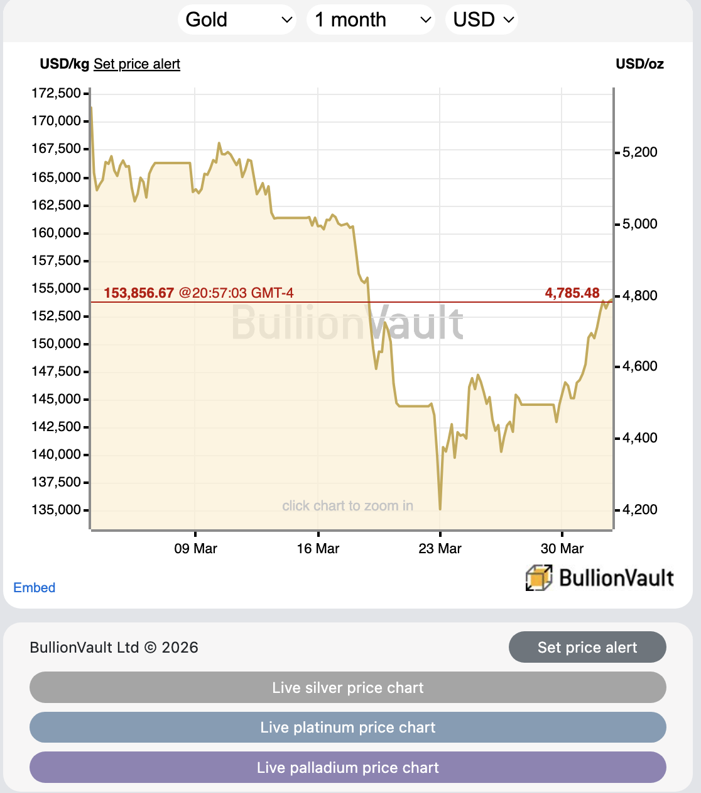
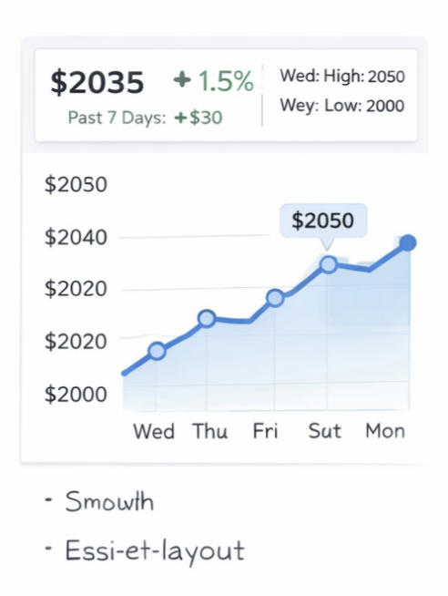

Financial markets / Visual analytics
Gold Market Visualization
Improving the clarity of financial information without compromising data integrity.
Original chart

Dense fluctuations and competing visual elements make the overall trend harder to interpret. Source: BullionVault.
Approach
Evaluated trend visibility, information hierarchy and chart complexity; collected exploratory feedback from two participants and prioritized key metrics and selective annotations.
Redesigned visualization

Findings and limitations
Feedback identified trend visibility and hierarchy as opportunities for improvement. The small sample does not establish measurable gains in speed or accuracy. Any smoothing must be disclosed to preserve transparency about volatility.